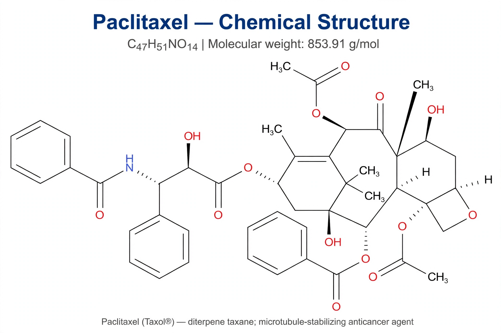

Paclitaxel
| Paclitaxel | |
|---|---|
| Trade name | Taxol, others |
| Class | Taxane; antineoplastic |
| Source | Pacific yew (Taxus brevifolia) bark; now semi-synthetic |
| Uses | Ovarian, breast, lung and other cancers |
| Formula | C47H51NO14 |

Paclitaxel, sold under the brand name Taxol among others, is a chemotherapy medication used to treat a number of cancers, including ovarian, breast, lung, cervical and pancreatic cancers and Kaposi's sarcoma. It is on the World Health Organization's List of Essential Medicines.
Mechanism
Paclitaxel belongs to the taxane class. It binds to microtubules and stabilises them, preventing their dynamic disassembly, which blocks normal mitotic spindle function and arrests dividing cells in mitosis, ultimately triggering apoptosis. This mechanism — the opposite of vinca alkaloids, which prevent microtubule assembly — was elucidated by Susan Horwitz and colleagues.
Discovery and production
The compound was isolated in the 1960s–70s from the bark of the Pacific yew under a US National Cancer Institute screening programme; its structure was published in 1971 by Monroe Wall and Mansukh Wani. Because harvesting bark killed the slow-growing trees, supply was a major concern; it is now produced by semi-synthesis from baccatin III, extracted from renewable yew needles, and by plant-cell fermentation. It was approved for medical use in the United States in 1992.
Adverse effects
Common side effects include hair loss, bone-marrow suppression, numbness and peripheral nerve damage, muscle and joint pain, and hypersensitivity reactions — the latter associated with its original solvent, Cremophor EL, which led to premedication with corticosteroids and antihistamines. An albumin-bound formulation (nab-paclitaxel) avoids the solvent.
See also: Docetaxel, Chemotherapy, Microtubule.